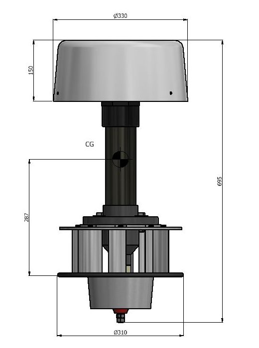

Cargando modelo 3D de la LH 140…
0 %
No se pudo cargar el modelo 3D
Detalle técnico

Tu navegador no tiene WebGL 2 disponible, así que mostramos una imagen fija. El recorrido y la calculadora funcionan igual.
Para ver el modelo 3D: activá la aceleración por hardware (Chrome/Edge: Configuración › Sistema), actualizá el navegador o el driver de video, y recargá.
Giro—rpm
Potencia—W